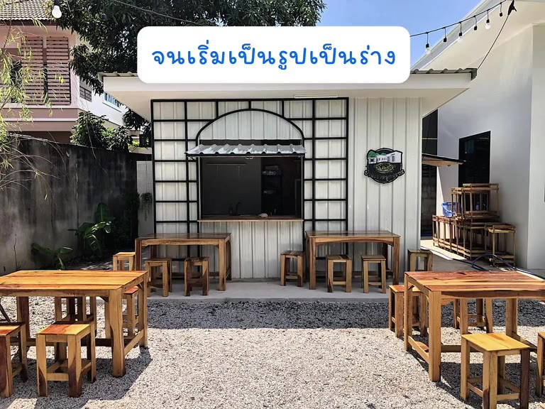

เรื่องราวของเรา
จากร้านเล็กๆ ข้างบ้าน… สู่ “บ้านเรา”
บ้านเราหมูกระทะเริ่มต้นจากร้านเล็กๆ ที่เราลงมือสร้างเองข้างบ้าน ชื่อ “บ้านเรา” ก็มาจากตรงนั้น ตั้งแต่วันแรกเราอยากให้ทุกคนที่มา รู้สึกเหมือนแวะมาทานข้าวที่บ้านญาติ บ้านเพื่อน
น้ำจิ้มรสเด็ด หมูหมัก และน้ำซุป เราทำเองที่ร้าน
- จุดเริ่มต้นร้านเล็กๆ ข้างบ้านของเรา
- ย้ายที่ใหม่ย้ายไปเปิดที่เช่า แล้วพักร้านไปราว 6 เดือน
- 13 ธ.ค. 2568กลับมาเปิดอีกครั้ง ด้วยความตั้งใจเดิม
“กำไรคือความสุข ลูกค้าทุกคนคือเพื่อน คือคนสนิทของเรา”
— จาก TikTok ของร้าน
วันนี้เรายังตั้งใจเหมือนเดิม — ร้านหมูกระทะบรรยากาศเหมือนนั่งทานที่บ้าน